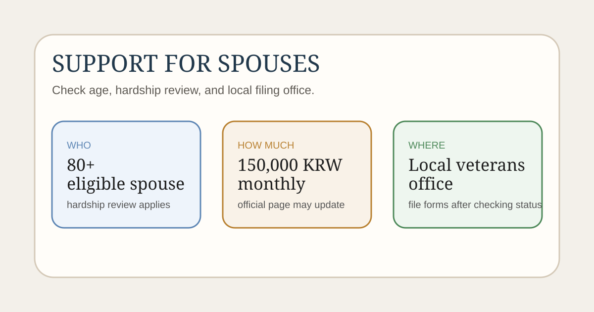

참전유공자 배우자 생계지원금을 찾는 분들이 지금 가장 궁금한 것은 누가 신청할 수 있는지, 얼마가 나오는지, 어디에 신청하는지일 가능성이 큽니다. 이번 제도는 2026년 3월부터 실제 신청 가능 시점이 열렸기 때문에, 기사 제목보다 공식 지원 페이지를 먼저 보는 편이 정확합니다.
이 글은 2026년 3월 3일 국가보훈부 보도자료, 국가보훈부 참전유공자 지원내용 페이지, 민원서식 안내를 기준으로 정리했습니다. 생계지원금은 생활수준 조사와 대상 확정 절차가 붙을 수 있으므로, 신청 직전에는 주소지 관할 보훈관서 기준을 다시 확인하세요.

2026년 3월부터 무엇이 달라졌나요?
국가보훈부는 2026년 3월 3일 보도자료에서 참전유공자 배우자 등록 생계지원금 지급을 3월 17일부터 시행한다고 안내했습니다. 국가보훈부 국정성과 홍보자료에는 이번 제도가 80세 이상, 기준 중위소득 50% 이하의 생계곤란 참전 배우자를 대상으로 하고, 월 15만 원 지급, 약 1만 7천 명 수혜 예상이라고 설명합니다.
즉, 이번 검색 수요의 핵심은 “새로 열렸는지”인데, 현재 공식 페이지 기준으로는 배우자 신청 가능 시점이 2026년 3월 17일로 명시돼 있습니다.
누가 신청할 수 있나요?
국가보훈부 지원내용 페이지에 따르면 생계지원금 대상은 아래와 같습니다.
- 참전유공자 등록자 또는
- 참전유공자가 사망한 경우 그 배우자
- 80세 이상
다만 같은 페이지에는 생계곤란한 경우 신청자에 한해 소득·재산조사를 실시 후 지원한다고 적혀 있습니다. 또 전·공상군경 등 경합으로 생활조정수당을 받고 있으면 제외라고 안내돼 있으므로, 연령만 맞는다고 바로 지급된다고 보면 안 됩니다.
얼마를 언제 지급하나요?
- 지급액: 월 150천 원
- 지급일자: 매월 15일
- 배우자 신청 가능 시점: 2026년 3월 17일부터
공식 페이지 표기상 지급액은 월 15만 원입니다. 다만 실제 지급 시작 시점은 대상 확정과 조사 완료 시점에 따라 달라질 수 있으므로, 신청 후 바로 첫 달 지급으로 단정하지 않는 편이 안전합니다.
신청은 어디에 하나요?
국가보훈부 지원내용 페이지에는 주소지 관할 보훈관서에 생계지원금 지급 신청서 등을 제출하도록 안내돼 있습니다. 민원서식 페이지에는 참전유공자 본인용 및 참전유공자 배우자용 신청서류가 올라와 있고, 예금계좌 지정 등 신청서는 생계지원금 대상자로 확정된 후 제출하면 된다고 적혀 있습니다.
즉, 준비 순서는 보통 아래처럼 보면 됩니다.
- 내가 배우자 신청 대상인지 확인
- 주소지 관할 보훈관서 확인
- 생계지원금 신청서류 내려받기
- 소득·재산조사 가능성을 염두에 두고 상담 후 제출
- 대상 확정 후 계좌 관련 서류 제출
신청 전에 특히 확인할 것
- 배우자 등록 상태: 보훈 행정상 등록·변동 사항이 최신인지
- 연령 기준: 80세 이상인지
- 중복 수급 여부: 생활조정수당과 경합되는지
- 소득·재산 조사: 생계곤란 판단 관련 자료를 추가로 요구하는지
- 관할 보훈관서: 실제 제출처와 상담 연락처가 어디인지
특히 지역마다 상담 동선이 다를 수 있어서, 서류를 바로 보내기보다 주소지 관할 보훈관서에 먼저 문의하는 편이 덜 헛걸음입니다.
한 번에 요약하면
- 참전유공자 배우자 생계지원금은 2026년 3월 17일부터 배우자도 신청 가능합니다
- 국가보훈부 지원내용 페이지 기준 월 15만 원, 매월 15일 지급입니다
- 대상은 참전유공자 사망 후 배우자를 포함하며 80세 이상 요건이 적혀 있습니다
- 신청은 주소지 관할 보훈관서에 합니다
- 자동 지급으로 보기보다 생계곤란 조사와 대상 확정 절차를 함께 봐야 합니다
자주 묻는 질문
Q. 배우자면 모두 자동으로 지급되나요?
그렇게 보기 어렵습니다. 국가보훈부 지원내용 페이지에는 신청자에 한해 소득·재산조사를 실시 후 지원한다고 안내돼 있습니다.
Q. 얼마를 받나요?
현재 공식 지원내용 페이지 기준으로 월 15만 원입니다.
Q. 어디에 신청하나요?
주소지 관할 보훈관서에 생계지원금 지급 신청서 등을 제출하는 방식으로 안내돼 있습니다.
공식 링크
생계지원금은 보훈관서 접수와 생활수준 조사에 따라 실제 진행 방식이 달라질 수 있습니다. 신청 직전에는 위 공식 페이지와 관할 보훈관서 안내를 다시 확인하세요.